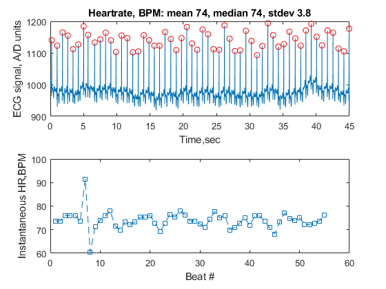

%Alyssa Rose HW4 2-19-18 %loads in data load ecgClean.mat %time vector generated tvec = SetupTimeVector(length(ecgData),Fs); %peaks in ecgData found threshold = 1050; iPeaks = FindEcgPeaks(ecgData,threshold); %heart rate calculated using previous 2 functions' values instBPM = CalcInstHR(tvec,iPeaks); %output string made using heart rate data outStr = CalcStats(instBPM); %ecg plotted with peaks marked w/ red circles figure subplot(2,1,1) plot(tvec,ecgData) xlabel('Time,sec') ylabel('ECG signal, A/D units') title(outStr) hold on plot(tvec(iPeaks), ecgData(iPeaks),'ro') hold off %inst. beats per minute plotted subplot(2,1,2) plot(instBPM,'--s') xlabel('Beat #') ylabel('Instantaneous HR,BPM') %generated plots saved as jpeg file saveas(gcf, 'figure.jpg') %{ 1.) When threshold = 0, then every point will be labeled as a peak when MainScript is run, and the entire graph is covered in red dots. mean: 6048 median: 5400 2.)When threshold = 1120, the top graph appears normal, whereas the instBPM graph returns values that seem impossible or unlikely for BPM values. This happens due to the limited data, and small difference in magnitude of peaks (since they are all high). mean: 64 median: 73 the median value appears to be closer to expected values, and would be more accurate since it diminshes the effects of the drastic differences in instBPM values. 3.) Thresholds between 1030 and 1130 appeared to give believable values for instBPM since the peaks were not too small or too high in value. If the values were smaller or larger than these thresholds, the # of peaks were too great or too small, resulting in drastic differences in peak values or not enough peaks (skewing data). 4.)The large distortion causes the instBPM to be out of range of normal values, with the ecg peaks occuring at large values and appearing to cluster around 12 sec. mean: 3821 median: 3600 neither value seems to be accurate, although median would be closer since its value is less than the mean. 5.)Setting the threshold to around 1100 causes the data to fit into an expected range since this is where most major peaks occured. mean: 73 median: 83 the mean value is more accurate since it matches most closely with previously calculated values %}